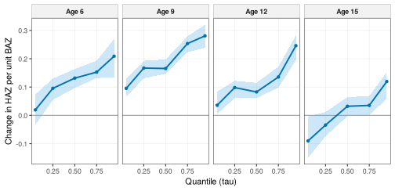
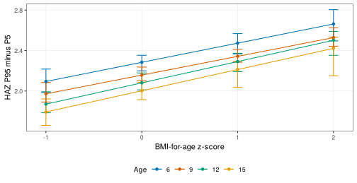
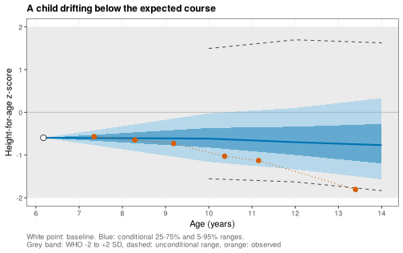
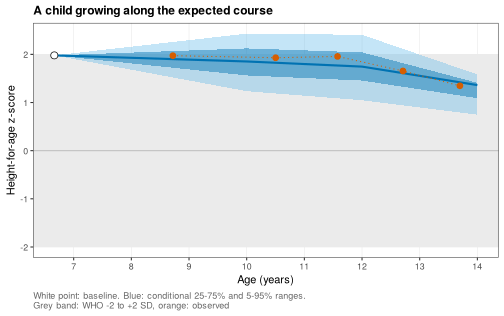
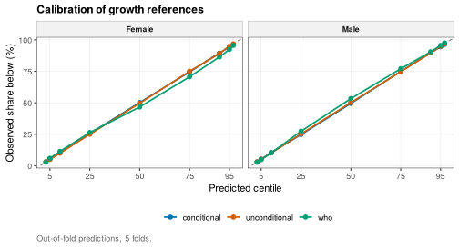
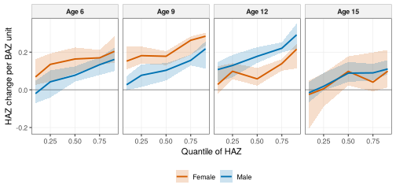
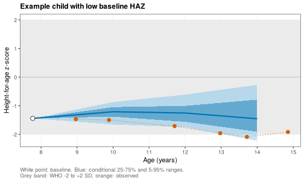

Growth distributions: quantile models, growth inequality and conditional references
Source:vignettes/growth-distributions.Rmd
growth-distributions.RmdAbout this vignette. All data are simulated with
wgh_simulate(). The results show how the methods work and resemble the published patterns, but they are not the published findings and are not research results. The functions run in development mode, with 50 bootstrap replicates for the quantile models and 5-fold cross-validation for the references.
Means hide what happens at the edges of a distribution. A child at the 5th centile of height and a child at the 95th may respond differently to the same BMI. This vignette shows three ways of modelling the whole distribution, each from a study of the research program:
- how BMI relates to height-for-age at different quantiles and ages, with quantile regression and linear quantile mixed models (Ho 2026) [1],
- how the spread of height-for-age changes with BMI and age, a measure of growth inequality (Ho 2026) [2], and
- conditional growth references, which say where a child is expected to be at a later age given the child’s own earlier growth (Ho 2026) [3].
The vignette is precomputed.
library(WeGrowHealthR)
wgh_config("dev")
#> WeGrowHealthR run mode: dev
v <- wgh_simulate(30000, seed = 2026)$visits
fl <- wgh_sample_flow(v, "Ages 5 to 18" = ~ age >= 5 & age <= 18.5,
"Plausible z-scores" = ~ abs(haz) < 6 & abs(baz) < 6,
"At least 3 visits" = wgh_min_visits(3))
a <- fl$data
girls <- a[a$sex == "Female", ]
boys <- a[a$sex == "Male", ]1. Quantile regression of HAZ on BAZ
The model lets the association of BAZ with HAZ change smoothly with age, through a natural spline of age interacting with BAZ:
Write the knots and boundary knots into the formula. If they were chosen from the data, every bootstrap replicate would get a slightly different basis and the replicates could not be combined.
wgh_rq() fits the model at each quantile in
taus, reads the BAZ slope at the anchor_ages
by contrast (the change in predicted HAZ when BAZ rises by one unit at
that age), and gets intervals from a bootstrap that resamples children
(B replicates), so repeated visits are handled
correctly.
fit_g <- wgh_rq(girls, f, taus = c(0.05, 0.25, 0.5, 0.75, 0.95), anchor_ages = c(6, 9, 12, 15), B = 50)
fit_g
#> <wgh_rq>: 5 quantiles, 15628 visits from 3827 children, 50 bootstrap replicates
#> Slope of baz by age and quantile:
#> # A tibble: 20 x 6
#> age tau estimate boot_se lower upper
#> <dbl> <dbl> <dbl> <dbl> <dbl> <dbl>
#> 1 6 0.05 0.019 0.029 -0.033 0.074
#> 2 9 0.05 0.096 0.019 0.066 0.131
#> 3 12 0.05 0.036 0.021 0.005 0.084
#> 4 15 0.05 -0.09 0.039 -0.149 -0.004
#> 5 6 0.25 0.096 0.021 0.055 0.13
#> 6 9 0.25 0.167 0.015 0.131 0.193
#> 7 12 0.25 0.098 0.017 0.061 0.122
#> 8 15 0.25 -0.034 0.022 -0.074 0.012
#> 9 6 0.5 0.132 0.019 0.097 0.164
#> 10 9 0.5 0.166 0.013 0.147 0.197
#> 11 12 0.5 0.083 0.016 0.062 0.115
#> 12 15 0.5 0.032 0.018 -0.002 0.064
#> 13 6 0.75 0.153 0.019 0.132 0.193
#> 14 9 0.75 0.254 0.016 0.223 0.28
#> 15 12 0.75 0.135 0.016 0.098 0.172
#> 16 15 0.75 0.035 0.019 0.002 0.068
#> 17 6 0.95 0.209 0.033 0.134 0.27
#> 18 9 0.95 0.281 0.023 0.238 0.32
#> 19 12 0.95 0.246 0.027 0.195 0.283
#> 20 15 0.95 0.119 0.029 0.058 0.153The printout gives the BAZ slope at each age and quantile with its
bootstrap standard error and interval. The same table is in
fit_g$slopes.
plot(fit_g, y_label = "Change in HAZ per unit BAZ")
Before puberty the slope is positive and largest at the upper
quantiles: higher BMI goes with greater height, most of all among the
tallest girls. By 15 years the slope is close to zero in the middle of
the distribution and negative at the 5th centile, the same convergence
seen in vignette("trajectories").
wgh_test_heterogeneity() tests whether the slopes at one
age are equal across quantiles, and
wgh_test_sex_difference() whether boys and girls
differ:
fit_b <- wgh_rq(boys, f, taus = c(0.05, 0.25, 0.5, 0.75, 0.95), anchor_ages = c(6, 9, 12, 15), B = 50)
wgh_test_heterogeneity(fit_g, age = 12)
#> # A tibble: 1 x 7
#> age chi_sq df p_value top_minus_bottom lower upper
#> <dbl> <dbl> <dbl> <dbl> <dbl> <dbl> <dbl>
#> 1 12 72.4 4 6.99e-15 0.210 0.142 0.248
wgh_test_sex_difference(fit_b, fit_g, age = 12)$joint
#> # A tibble: 1 x 4
#> age chi_sq df p_value
#> <dbl> <dbl> <int> <dbl>
#> 1 12 25.0 5 0.000139wgh_slopes() reads slopes at any other ages from the
same fit, for example
wgh_slopes(fit_g, ages = c(7, 13)).
Accounting for repeated visits: LQMM
Quantile regression treats visits as independent and handles
clustering only through the bootstrap. A linear quantile mixed model
adds a random intercept for each child. wgh_lqmm() has the
same interface as wgh_rq() and retries with more iterations
when the optimiser warns.
set.seed(1)
small <- girls[girls$id %in% sample(unique(girls$id), 600), ]
lq <- wgh_lqmm(small, f, taus = c(0.1, 0.5, 0.9), anchor_ages = c(6, 9, 12, 15), B = 0)
lq$slopes
#> # A tibble: 12 x 3
#> age tau estimate
#> <dbl> <dbl> <dbl>
#> 1 6 0.1 0.0745
#> 2 9 0.1 0.135
#> 3 12 0.1 0.105
#> 4 15 0.1 0.0181
#> 5 6 0.5 0.154
#> 6 9 0.5 0.266
#> 7 12 0.5 0.163
#> 8 15 0.5 0.0344
#> 9 6 0.9 0.0203
#> 10 9 0.9 0.0821
#> 11 12 0.9 -0.0102
#> 12 15 0.9 -0.118
lq$convergence
#> # A tibble: 3 x 6
#> tau ok converged ladder_step method messages
#> <dbl> <lgl> <lgl> <dbl> <chr> <chr>
#> 1 0.1 TRUE TRUE 1 gs ""
#> 2 0.5 TRUE TRUE 1 gs ""
#> 3 0.9 TRUE TRUE 1 gs ""The convergence table reports, for each quantile,
whether the fit converged, which step of the retry ladder was needed and
the messages of the failed attempts.
2. Growth inequality: the spread of height-for-age
The same quantile model describes the spread of the distribution. The
distance between the 95th and the 5th centile of HAZ
(range90) and the interquartile range (iqr)
can be read at any age and BAZ. wgh_dispersion() does that,
with bootstrap intervals, and also reports the change in spread per unit
of BAZ.
dsp <- wgh_dispersion(fit_g, ages = c(6, 9, 12, 15), exposure_values = c(-1, 0, 1, 2, 3))
head(dsp$spread)
#> # A tibble: 6 x 8
#> age baz range90 iqr range90_lower range90_upper iqr_lower iqr_upper
#> <dbl> <dbl> <dbl> <dbl> <dbl> <dbl> <dbl> <dbl>
#> 1 6 -1 2.09 0.857 1.98 2.22 0.794 0.903
#> 2 9 -1 1.97 0.723 1.89 2.08 0.665 0.763
#> 3 12 -1 1.87 0.798 1.78 1.99 0.751 0.842
#> 4 15 -1 1.79 0.751 1.66 1.92 0.676 0.825
#> 5 6 0 2.28 0.915 2.20 2.35 0.865 0.954
#> 6 9 0 2.16 0.810 2.10 2.24 0.770 0.850
dsp$change
#> # A tibble: 4 x 7
#> age range90_per_unit iqr_per_unit range90_lower range90_upper iqr_lower iqr_upper
#> <dbl> <dbl> <dbl> <dbl> <dbl> <dbl> <dbl>
#> 1 6 0.189 0.0573 0.107 0.243 0.0138 0.0951
#> 2 9 0.185 0.0867 0.142 0.234 0.0656 0.115
#> 3 12 0.210 0.0375 0.142 0.248 0.00278 0.0667
#> 4 15 0.210 0.0693 0.0759 0.269 0.0157 0.108A spread read at a BAZ where few children are measured is an
extrapolation. wgh_support() counts the children near each
age and BAZ and flags the supported cells:
sup <- wgh_support(girls, "baz", ages = c(6, 9, 12, 15), exposure_values = c(-1, 0, 1, 2, 3))
head(sup)
#> # A tibble: 6 x 4
#> age baz n_local supported
#> <dbl> <dbl> <int> <lgl>
#> 1 6 -1 107 TRUE
#> 2 9 -1 162 TRUE
#> 3 12 -1 88 TRUE
#> 4 15 -1 82 TRUE
#> 5 6 0 200 TRUE
#> 6 9 0 282 TRUE
sp <- merge(dsp$spread, sup[, c("age", "baz", "supported")], by = c("age", "baz"))
library(ggplot2)
ggplot(sp[sp$supported, ], aes(baz, range90, colour = factor(age))) +
geom_errorbar(aes(ymin = range90_lower, ymax = range90_upper), width = 0.1) +
geom_line() + geom_point() + scale_colour_wgh() + theme_wgh() +
labs(x = "BMI-for-age z-score", y = "HAZ P95 minus P5", colour = "Age")
In these simulated girls the spread widens by about 0.2 HAZ units for
each unit of BAZ at every age (dsp$change): girls with
higher BMI differ more from each other in height than girls with normal
BMI, a form of growth inequality that a mean model cannot show.
3. Conditional growth references
A WHO chart compares a child with all children of the same age and sex. A conditional reference compares the child with children who had the same starting point. It answers a clinical question: given this child’s height and BMI at 6 years, where should the child’s height-for-age be at 10, 12 or 14 years? A child who stays inside the WHO band can still fall well below the course expected from the child’s own history, and that is what a conditional reference detects.
A cohort with long follow-up
Conditional references need children measured both in a conditioning
window and years later. The simulation settings below give a cohort
followed for 14 school years with little dropout: years
sets the calendar years, dropout the yearly probability of
leaving, and entry_first_prob the share of children
enrolled from their first eligible year.
long <- wgh_simulate(12000, preset = "reference", seed = 11, years = 2012:2025,
dropout = c(intercept = -4, age = 0), entry_first_prob = 0.9)$visitsBuilding the panel
wgh_conditional_panel() takes, for each child, the visit
nearest anchor (6 years) within the conditioning
window as the baseline, a second visit near
anchor2 for a slope, and the visit nearest each target age
(within tol years) as the outcome. Children are not dropped
for lacking the second visit.
cp <- wgh_conditional_panel(long, window = c(5, 9), anchor = 6, anchor2 = 8, targets = c(10, 12, 14))
table(cp$sex, cp$target_nominal)
#>
#> 10 12 14
#> Male 1071 647 267
#> Female 978 650 285
head(cp[, c("id", "sex", "baseline_age", "baseline_haz", "baseline_baz", "target_nominal", "target_age", "target")])
#> # A tibble: 6 x 8
#> id sex baseline_age baseline_haz baseline_baz target_nominal target_age target
#> <chr> <fct> <dbl> <dbl> <dbl> <dbl> <dbl> <dbl>
#> 1 C000004 Male 5.53 2.82 0.314 10 9.56 1.93
#> 2 C000005 Male 7.11 -0.126 -0.486 10 10.2 -0.659
#> 3 C000007 Male 5.92 1.44 1.74 10 9.83 0.696
#> 4 C000010 Male 5.72 0.218 0.164 10 10.5 -0.071
#> 5 C000011 Male 5.53 1.05 0.632 10 10.4 1.17
#> 6 C000014 Female 6.42 -0.973 0.955 10 10.3 -0.088Fitting the references
wgh_condref() fits quantile regressions of the target
HAZ on the baseline features, by sex and target age, over a grid of
quantiles. The formula sets the baseline features (default
baseline HAZ, BAZ and age). Three benchmarks are stored alongside: the
unconditional reference (the target distribution ignoring the baseline),
persistence (baseline plus the typical change) and the WHO band
(standard normal quantiles).
cr <- wgh_condref(cp)
cr
#> <wgh_condref>: 6 sex-by-target models, 9 quantiles
#> # A tibble: 6 x 3
#> sex target n
#> <chr> <dbl> <int>
#> 1 Male 10 1071
#> 2 Female 10 978
#> 3 Male 12 647
#> 4 Female 12 650
#> 5 Male 14 267
#> 6 Female 14 285predict() returns the predicted quantiles for any child,
under the conditional model or a benchmark (type):
child <- cp[cp$target_nominal == 14 & cp$baseline_haz < -1, ][1, ]
round(predict(cr, child), 2)
#> q0.030 q0.050 q0.100 q0.250 q0.500 q0.750 q0.900 q0.950 q0.970
#> [1,] -2.35 -2.32 -2.21 -2.02 -1.56 -0.93 -0.56 -0.38 -0.33
round(predict(cr, child, type = "who"), 2)
#> q0.030 q0.050 q0.100 q0.250 q0.500 q0.750 q0.900 q0.950 q0.970
#> [1,] -1.88 -1.64 -1.28 -0.67 0 0.67 1.28 1.64 1.88For this child, who started below -1 HAZ, the conditional range at 14 years is centred well below zero, near the child’s own level, and is much narrower than the WHO range.
Showing one child: the fan chart
wgh_plot_fan() draws the expected course. The fan opens
at the baseline measurement (known, so it has no width) and widens to
the predicted 25th to 75th and 5th to 95th centile ranges at each target
age. The grey band is the WHO -2 to +2 SD range,
show_unconditional = TRUE adds the cohort’s unconditional
range, and observed overlays the child’s later
measurements.
Here is a child whose height-for-age drifted downwards. We find such
a child with wgh_condref_centile() (next section): flagged
below the conditional 3rd centile at 14 years, yet still inside the WHO
band.
sc <- wgh_condref_centile(cr, cp)
full <- names(which(table(cp$id) == 3))
drift <- sc[sc$target_nominal == 14 & sc$cond_flag == "below" & sc$target > -2 & sc$id %in% full, ][1, ]
drift[, c("id", "sex", "baseline_age", "baseline_haz", "target", "cond_centile")]
#> # A tibble: 1 x 6
#> id sex baseline_age baseline_haz target cond_centile
#> <chr> <fct> <dbl> <dbl> <dbl> <dbl>
#> 1 C001571 Male 6.17 -0.596 -1.81 3.00
later <- long[long$pid == drift$id & long$age > drift$baseline_age, c("age", "haz")]
wgh_plot_fan(cr, drift, observed = later, show_unconditional = TRUE,
title = "A child drifting below the expected course")
Every measurement of this child stays inside the WHO band, so a standard growth chart raises no alarm. The conditional fan shows that the child started inside the expected course and left it, which is the signal a clinician would want to see. For contrast, a child growing as expected:
typ <- sc[sc$target_nominal == 14 & abs(sc$cond_centile - 50) < 10 & sc$id %in% full, ][1, ]
later_t <- long[long$pid == typ$id & long$age > typ$baseline_age, c("age", "haz")]
wgh_plot_fan(cr, typ, observed = later_t, title = "A child growing along the expected course")
Conditional centiles and flags
wgh_condref_centile() places each observed target value
in its predicted distribution. cond_centile is the
conditional centile (0 to 100), cond_z its normal score,
and cond_flag is "below" or
"above" when the centile is outside 3 to 97
(flag).
Are the references any good?
A reference is useful if its ranges are both honest and narrow.
wgh_condref_cv() fits the references on part of the
children and scores them on the others (folds child-level
folds, or folds = "site" to leave one site out):
-
crps(continuous ranked probability score) andwis(weighted interval score) measure the accuracy of the whole predicted distribution. Lower is better. -
coverage_90is the share of children inside the predicted 90% range. It should be close to 0.90. -
width_90is the width of that range. Narrower is more useful, as long as coverage holds.
cv <- wgh_condref_cv(cp, folds = 5)
aggregate(cbind(crps, wis, coverage_90, width_90) ~ model, data = cv, FUN = mean)
#> model crps wis coverage_90 width_90
#> 1 conditional 0.2318450 0.1925505 0.8888939 1.330110
#> 2 persistence 0.2919781 0.2450583 0.8960622 1.769993
#> 3 unconditional 0.5573599 0.4627864 0.8961755 3.308607
#> 4 who 0.5589127 0.4642847 0.8903847 3.289707All four references cover about 90% of children, so all are honest. The conditional reference has by far the lowest CRPS and WIS and a 90% range less than half as wide as the WHO range: it says much more about each child for the same honesty. Persistence is in between, because it uses the baseline but ignores BMI and regression to the mean.
A flexible benchmark and a child-by-child comparison
Is the linear conditional reference too simple? A quantile random
forest (wgh_quantile_forest(), built on
ranger) makes no assumption about the shape of the
relationship, so it is a demanding benchmark (Book 2 Chapter 15).
forest = TRUE adds it to the cross-validation.
Comparing average scores across models ignores that the models
predict the same children. wgh_condref_compare() scores
every held-out prediction and compares two references child by child,
with a bootstrap that resamples children
(wgh_paired_scores(), Book 2 Chapter 16). A negative
difference means the model scores better than the reference.
cmp <- wgh_condref_compare(cp, models = c("conditional", "persistence", "forest"), reference = "who",
folds = 5, B = 500)
cmp[, c("model", "reference", "mean_new", "mean_old", "mean_diff", "lower", "upper", "relative_change_pct")]
#> # A tibble: 3 x 8
#> model reference mean_new mean_old mean_diff lower upper relative_change_pct
#> <chr> <chr> <dbl> <dbl> <dbl> <dbl> <dbl> <dbl>
#> 1 conditional who 0.218 0.566 -0.348 -0.365 -0.331 -61.5
#> 2 persistence who 0.276 0.566 -0.290 -0.310 -0.271 -51.2
#> 3 forest who 0.243 0.566 -0.322 -0.340 -0.306 -57.0
wgh_condref_compare(cp, models = "forest", reference = "conditional", folds = 5, B = 500)[,
c("model", "reference", "mean_diff", "lower", "upper", "relative_change_pct")]
#> # A tibble: 1 x 6
#> model reference mean_diff lower upper relative_change_pct
#> <chr> <chr> <dbl> <dbl> <dbl> <dbl>
#> 1 forest conditional 0.0256 0.0214 0.0300 11.7The first table shows how much each reference improves on the WHO band for the same children. The second asks whether the forest improves on the linear conditional reference. When its interval lies above zero the forest is worse, and the simpler linear model, which can be written as an equation and explained, is preferred.
wgh_plot_condref_calibration() checks every quantile,
not only the 90% range, with out-of-fold predictions. Points on the
diagonal mean that, for example, 10% of children fall below the
predicted 10th centile.
wgh_plot_condref_calibration(cp, folds = 5)
4. The three studies in one call each
dist <- wgh_flow_distributional_height(v, engine = "rq")
dist
#>
#> -- BMI and the height-for-age distribution (Ho 2026, medRxiv 2026.09.08.26362487) --
#>
#> Tables (6): mean_model_slopes_male, mean_model_slopes_female, quantile_slopes, heterogeneity,
#> sex_difference, crossing
#> Figures (2): fig_coefficient_functions, fig_spread_by_bmi
#> Models: Male, Male_mean, Female, Female_mean
#> Model status: 14 ok, 0 failed, 1 skipped
#> skipped: qgam sensitivity analysis (sensitivity = FALSE)
#> Settings: mode = dev; engine = rq
ineq <- wgh_flow_growth_inequality(v)
ineq$tables$change_per_baz
#> # A tibble: 8 x 8
#> sex age range90_per_unit iqr_per_unit range90_lower range90_upper iqr_lower iqr_upper
#> <chr> <dbl> <dbl> <dbl> <dbl> <dbl> <dbl> <dbl>
#> 1 Male 6 0.209 0.0874 0.157 0.291 0.0437 0.112
#> 2 Male 9 0.133 0.0606 0.0729 0.197 0.0345 0.0805
#> 3 Male 12 0.143 0.0482 0.111 0.180 0.0239 0.0805
#> 4 Male 15 0.0385 0.0386 0.00390 0.0763 0.0146 0.0539
#> 5 Female 6 0.188 0.0527 0.0843 0.207 0.0171 0.0828
#> 6 Female 9 0.190 0.0931 0.155 0.208 0.0654 0.119
#> 7 Female 12 0.206 0.0395 0.132 0.231 0.0345 0.0540
#> 8 Female 15 0.196 0.0632 0.112 0.221 0.0402 0.110
cond <- wgh_flow_conditional_references(long, window = c(5, 9), targets = c(10, 12, 14))
cond$tables$cv_scores
#> model sex target pinball crps wis coverage_50 coverage_80 coverage_90
#> 1 conditional Female 10 0.06983372 0.1995711 0.1658661 0.4976136 0.7894143 0.8965957
#> 2 persistence Female 10 0.07607094 0.2148409 0.1797830 0.4966910 0.8025468 0.8947168
#> 3 unconditional Female 10 0.21706175 0.6217823 0.5154982 0.4948892 0.7971856 0.8934567
#> 4 who Female 10 0.21850623 0.6242113 0.5187479 0.4200603 0.7284731 0.8439935
#> 5 conditional Male 10 0.06239548 0.1767435 0.1473788 0.5012924 0.7992373 0.8973677
#> 6 persistence Male 10 0.09858741 0.2761708 0.2322708 0.5033466 0.7992391 0.8975730
#> 7 unconditional Male 10 0.18187642 0.5193254 0.4315325 0.4939049 0.7955761 0.9000547
#> 8 who Male 10 0.18198792 0.5191820 0.4316313 0.5171192 0.8124256 0.9233869
#> 9 conditional Female 12 0.08563229 0.2439259 0.2029591 0.5002546 0.7952787 0.8861766
#> 10 persistence Female 12 0.09541890 0.2701642 0.2256561 0.4964062 0.7983967 0.9039507
#> 11 unconditional Female 12 0.20963943 0.6054765 0.4993672 0.4935375 0.7919666 0.8942744
#> 12 who Female 12 0.21103738 0.6086360 0.5029292 0.4286913 0.7340165 0.8620202
#> 13 conditional Male 12 0.08912708 0.2528597 0.2108155 0.5003241 0.7851934 0.8810167
#> 14 persistence Male 12 0.11795218 0.3298829 0.2784144 0.5005689 0.7964596 0.8925374
#> 15 unconditional Male 12 0.19125672 0.5430587 0.4532136 0.4902063 0.8025505 0.8960094
#> 16 who Male 12 0.19135235 0.5440629 0.4534606 0.4923007 0.8004082 0.8955677
#> 17 conditional Female 14 0.07404743 0.2105119 0.1748415 0.4760269 0.7797074 0.8781779
#> 18 persistence Female 14 0.11415930 0.3201106 0.2691987 0.4957428 0.7837520 0.8923284
#> 19 unconditional Female 14 0.16414099 0.4667632 0.3892111 0.5060887 0.7970958 0.8947541
#> 20 who Female 14 0.16622989 0.4724438 0.3941396 0.5485457 0.8601954 0.9436541
#> 21 conditional Male 14 0.10980716 0.3145168 0.2601730 0.4908944 0.7701144 0.8634835
#> 22 persistence Male 14 0.12357761 0.3501622 0.2924892 0.5051118 0.7860130 0.8869090
#> 23 unconditional Male 14 0.20082339 0.5755862 0.4771739 0.4983274 0.7995733 0.8925329
#> 24 who Male 14 0.20279486 0.5822913 0.4824127 0.4305257 0.7792285 0.8775730
#> width_50 width_80 width_90
#> 1 0.4983674 0.9510743 1.208031
#> 2 0.5252500 1.0043667 1.288867
#> 3 1.6118333 2.9297000 3.647383
#> 4 1.3489795 2.5631031 3.289707
#> 5 0.4292926 0.8333050 1.041957
#> 6 0.6523333 1.2677000 1.657967
#> 7 1.2715833 2.4791000 3.058750
#> 8 1.3489795 2.5631031 3.289707
#> 9 0.6281252 1.1368128 1.411351
#> 10 0.6714167 1.2415333 1.631767
#> 11 1.5591667 2.9013000 3.549417
#> 12 1.3489795 2.5631031 3.289707
#> 13 0.6577805 1.1616802 1.460759
#> 14 0.7400833 1.4937333 2.116167
#> 15 1.3595833 2.5419000 3.301850
#> 16 1.3489795 2.5631031 3.289707
#> 17 0.4893853 0.9306803 1.192417
#> 18 0.7506667 1.4055000 1.922283
#> 19 1.2069167 2.1797000 2.810467
#> 20 1.3489795 2.5631031 3.289707
#> 21 0.8705319 1.4233293 1.682282
#> 22 0.9244167 1.5242333 2.000450
#> 23 1.4826667 2.6193333 3.450150
#> 24 1.3489795 2.5631031 3.289707
cond$tables$flags
#> sex target_nominal below above
#> 1 Male 10 3.0 2.9
#> 2 Female 10 3.0 3.0
#> 3 Male 12 2.9 2.9
#> 4 Female 12 3.1 3.1
#> 5 Male 14 3.4 2.6
#> 6 Female 14 3.2 2.8
plot(dist, "fig_coefficient_functions")
plot(cond, "fig_fan_low")
engine = "lqmm" (default) uses linear quantile mixed
models as in the study, and sensitivity = TRUE adds a
smooth quantile regression check with qgam. Both are
slower.
Where to go next
-
vignette("prediction")explains individual conditional predictions with SHAP values. -
vignette("phenotypes-states")looks at movement between height bands over time.
References
Ho NT. The age-varying association between BMI and height-for-age in Vietnamese schoolchildren: a sex-stratified quantile regression study. medRxiv. 2026. 2026.09.08.26362487. https://doi.org/10.64898/2026.09.08.26362487
Ho NT. Growth inequality over age and BMI in Vietnamese children: age-varying dispersion of the conditional height-for-age distribution from quantile regression. Manuscript under review. 2026.
Ho NT. Conditional growth references for Vietnamese children: quantile regression of growth distributions and phenotypes. medRxiv. 2026. 2026.09.23.26363771. https://doi.org/10.64898/2026.09.23.26363771